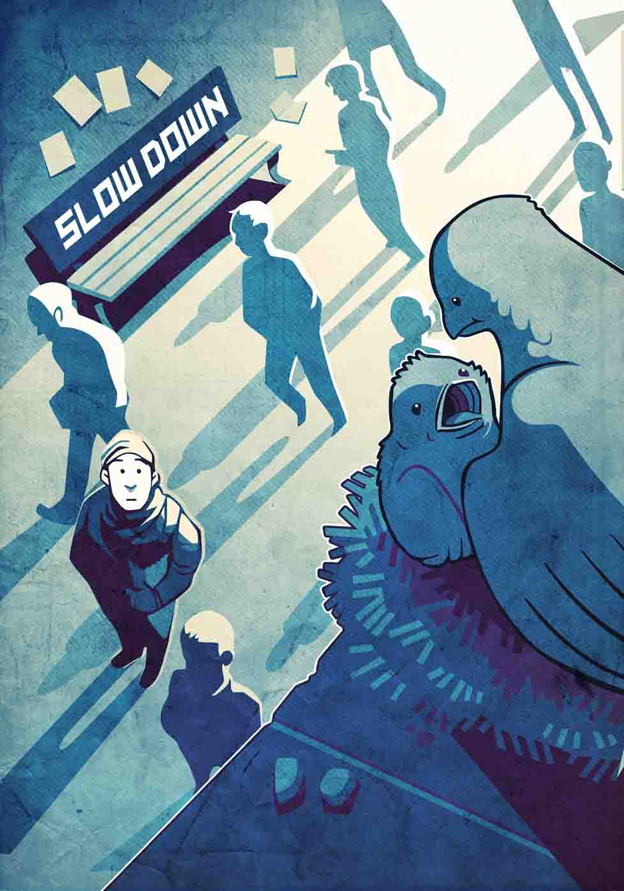

Slow Down
Rushing produces errors. Being distracted when you are with someone prevents deep connection. Hurrying through a meal diminishes your enjoyment of the food and may upset your digestion.
- A human be-ing, not a human do-ing.
- Let yourself have some silence.
- Single-tasking--focus completely on one thing at a time.
- Do less. Decide what is really important, and let the rest go.
- Reduce your commitments.
- Learn to be present, no matter what you are doing.
- Disconnect from the electronic world.
- Focus on the people, nature, food as you eat it.
- Breathe.
